挖子尾地區的海濱植物種類和特性說明
 |
 |
 |
| 1.水筆仔的胚軸 | 2.蔓荊的花 | 3.單花蟛蜞菊的花與種子 |
| 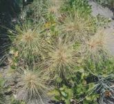 |  |
|
| 4.濱刺麥的雌花 | 5.馬鞍藤的花 | 6.林投樹的果實 |
| 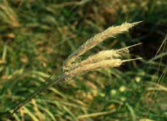 | ||
| 7.鹽地鼠尾粟的草地 | 8.蘆葦的花 | 9.白茅的花 |
 |
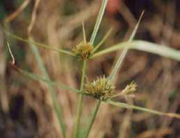 |  |
| 10.三角仙人掌的果實 | 11.海韭菜的花 | 12.澤蘭的花 |
 |
||
| 13.雙花蟛蜞菊的花 | 14.木麻黃的種子 | 15.巴拉草的莖 |
| 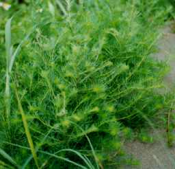 |  |
|
| 16.茵陳蒿的葉 | 17.黃槿的花 | 18.變葉藜 |
| 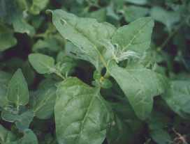 | 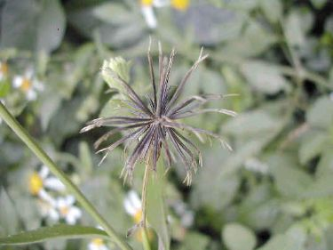 | 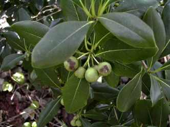 |
| 19.番杏 | 20.咸豐草的種子 | 21.海桐的種子 |
 |
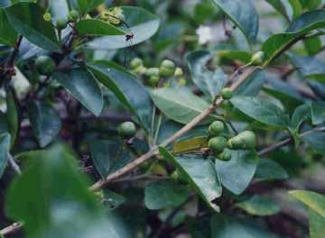 | 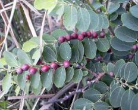 |
| 22.甜根子草的花 | 23.苦林盤的種子 | 24.紅珠子種子 |
| 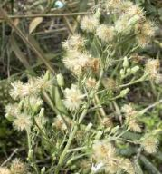 | 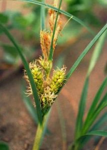 | 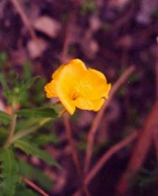 |
| 25.野桐蒿的花 | 26.海米的種子 | 27.水丁香的種子 |
| 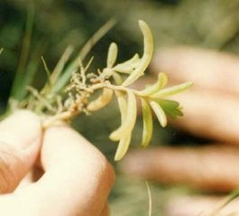 | 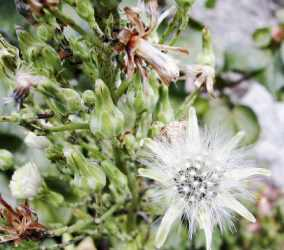 | |
| 28.夏天的鹽定 | 29.垂桉草的花 | 30.山萵苣的花 |
| 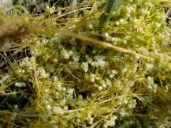 | 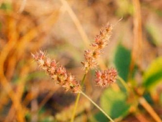 | 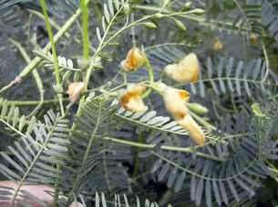 |
| 31.菟絲草的花 | 32蒺藜草的種子 | 33.田青的花 |
| 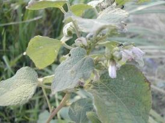 |  |
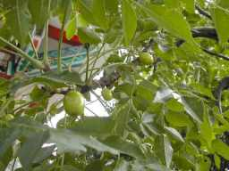 |
| 34.紅色梵天花 | 35.銀合歡的花 | 36.苦楝的種子 |
| 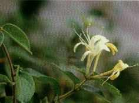 | 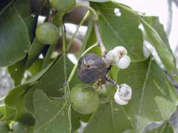 | 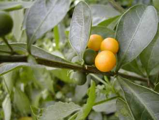 |
| 37.金銀花的花 | 38.烏臼的種子 | 39.瑪瑙珠的種子 |
| 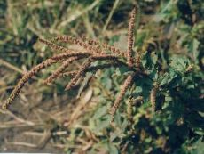 |  |
 |
| 40.刺莧的花 | 41.朱槿的花 | 42.雞屎藤的花 |